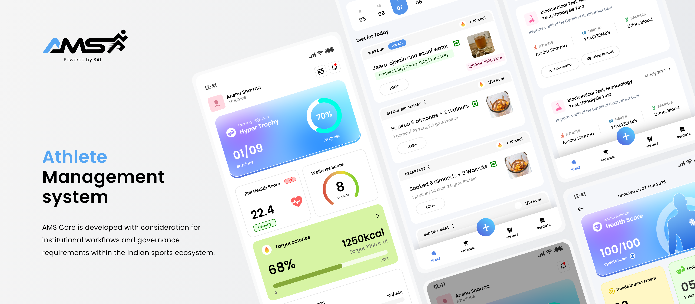
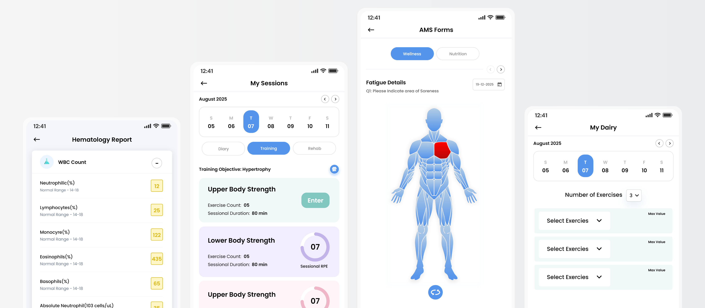
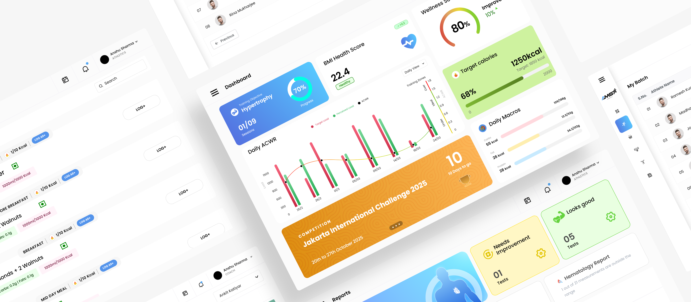
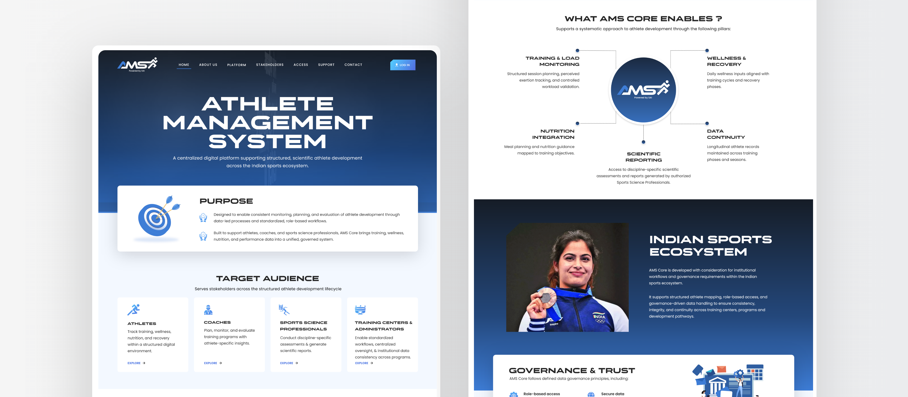
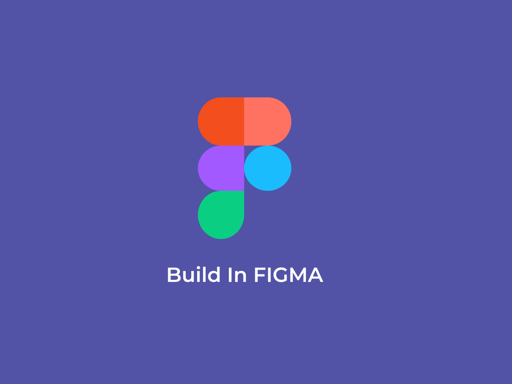

The Fit India Mobile App, developed by the Sports Authority of India, is a free, comprehensive fitness tool to help Indians assess.

Fit India was envisioned as a unified fitness platform that simplifies health tracking, workout planning, and progress monitoring while encouraging users to stay committed to their wellness goals. Through user research, we identified several key challenges:.
As Fit India evolved from a simple fitness concept into a comprehensive health and wellness platform, maintaining consistency across screens became increasingly challenging. Multiple user journeys—including workout tracking, goal setting, progress monitoring, nutrition guidance, and profile management—required a unified experience.

Research revealed that users wanted a simple, motivating, and goal-oriented platform that could help them track progress, stay accountable, and build sustainable fitness habits without unnecessary complexity.
Based on our research findings, we focused on creating a fitness experience that was simple, motivating, and user-centered. The strategy was built around reducing complexity, increasing user engagement, and helping individuals stay consistent with their fitness journey. By prioritizing clarity, personalization, and progress visibility, we aimed to create an experience that users could easily adopt and maintain over the long term.

The platform was designed to reduce friction, improve accessibility, and provide users with clear visibility into their fitness journey while maintaining a consistent and engaging experience across all touchpoints.

